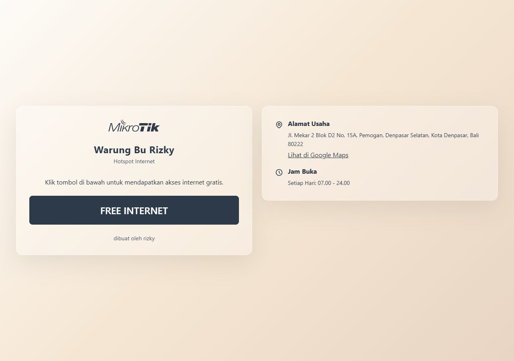

ITB Stikom Bali
Sistem Informasi, mahasiswa aktif.
AI, Web, dan Networking
Mahasiswa Sistem Informasi yang membangun agen AI, website, dan jaringan internet yang rapi.
ITB Stikom Bali
Tentang
Saya mahasiswa ITB Stikom Bali dengan minat kuat di AI Development, Web Development, dan Networking. Saya senang menghubungkan ide praktis dengan teknologi yang bisa dipakai sehari-hari.
Saya juga aktif sebagai anggota Komisi 2 (Hukum & Advokasi) di Dewan Perwakilan Mahasiswa. Dari sana saya belajar komunikasi, tanggung jawab, dan cara melihat masalah dari sisi manusia.
Bekal multimedia dari SMK Pariwisata Harapan membantu saya memahami desain grafis, produksi konten, dan pengelolaan media digital.
Di luar projek teknis, saya juga pernah membangun identitas konten meme satir/sarkas lewat akun @agent_dudul di Instagram dan TikTok.
Sistem Informasi, mahasiswa aktif.
Jurusan Multimedia.
Hukum & Advokasi.
Keahlian
Membangun AI Agent yang terhubung ke Telegram dan kebutuhan otomasi harian.
Membuat website statis yang cepat, responsif, dan mudah dipublikasikan.
Merancang jaringan internet yang terstruktur untuk kebutuhan rumah dan usaha.
Tertarik membuat konten menarik seperti meme satir/sarkas, serta suka cosplay di event bertema Jepang.
Projek

Halaman hotspot trial di MikroTik yang menampilkan profil usaha Warung Bu Rizky saat pelanggan masuk ke jaringan internet.
Sistem personal AI automation dengan dua agen di hardware berbeda: satu berjalan di laptop lewat WhatsApp, satu berjalan di PC lewat Telegram. Keduanya dapat saling terhubung melalui server jaringan rumah dan membantu pekerjaan teknis harian.
Website portofolio personal yang ringan, responsif, dan siap di-host gratis lewat GitHub Pages.
Karya Konten
Akun kreatif untuk meme satir/sarkas, pengamatan sosial, dan eksperimen gaya komunikasi digital. Bagian ini dipisah dari project teknis supaya portofolio tetap rapi.
Kontak
Silakan hubungi lewat kanal di bawah ini. Saya paling aktif di Instagram dan TikTok.